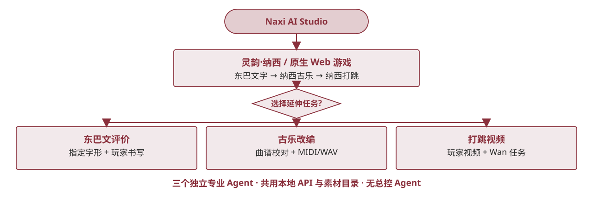

（三）分析过程分析方法：从路径到产品
以用户路径分析确定“剧情—知识—练习—Agent”入口；以配对题观察知识变化，以 TAM 均分探索接受度。产品架构因此围绕一个游戏核心和三个独立专业 Agent 展开。

证据与状态 用户路径日志与 Agent 质量评价仍是后续方法；现有调查不是随机对照或真实 AI 效果实验。
以用户路径分析确定“剧情—知识—练习—Agent”入口；以配对题观察知识变化，以 TAM 均分探索接受度。产品架构因此围绕一个游戏核心和三个独立专业 Agent 展开。

证据与状态 用户路径日志与 Agent 质量评价仍是后续方法；现有调查不是随机对照或真实 AI 效果实验。